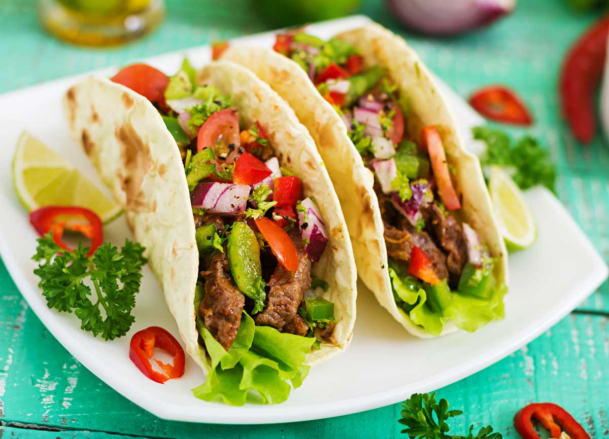

Risotto de calabaza
Ingredients
- 200g de arroz para risotto
- 400g de calabaza
- 1 litro de caldo de verduras
- Queso parmesano rallado
- Aceite de oliva y sal
Temps
Preparación: 15 minutos
Cocción: 30 minutos
Passos
- Corta la calabaza en cubos y sofríe en aceite de oliva.
- Agrega el arroz y remueve durante 2 minutos.
- Vierte el caldo poco a poco mientras remueves.
- Cuando el arroz esté al dente, añade queso parmesano y ajusta la sal.
Espaguetis a la carbonara

Ingredients
- 200g de espaguetis
- 100g de panceta
- 2 huevos
- Queso pecorino rallado
- Pimienta negra
Temps
Preparación: 10 minutos
Cocción: 15 minutos
Passos
- Cocina los espaguetis según las instrucciones del paquete.
- Sofríe la panceta hasta que esté crujiente.
- Bate los huevos con el queso y la pimienta.
- Mezcla los espaguetis calientes con la panceta y la mezcla de huevo.
Pollo al curry

Ingredients
- 500g de pechuga de pollo
- 200ml de leche de coco
- 2 cucharadas de curry en polvo
- 1 cebolla
- Aceite de oliva y sal
Temps
Preparación: 10 minutos
Cocción: 20 minutos
Passos
- Corta el pollo en cubos y dóralo en aceite.
- Sofríe la cebolla picada hasta que esté transparente.
- Agrega el curry y la leche de coco, y cocina por 10 minutos.
- Incorpora el pollo y cocina por otros 5 minutos.
Sopa de lentejas
Ingredients
- 250g de lentejas
- 1 zanahoria
- 1 patata
- 1 litro de caldo de verduras
- Sal y pimienta
Temps
Preparación: 10 minutos
Cocción: 40 minutos
Passos
- Remoja las lentejas por 30 minutos.
- Corta la zanahoria y la patata en cubos pequeños.
- Cocina las lentejas con las verduras y el caldo.
- Sazona al gusto y sirve caliente.
Ensalada César

Ingredients
- Lechuga romana
- 100g de pollo a la parrilla
- Crutones
- Queso parmesano
- Salsa César
Temps
Preparación: 10 minutos
Cocción: 0 minutos
Passos
- Lava y trocea la lechuga.
- Corta el pollo en tiras.
- Mezcla todos los ingredientes con la salsa César.
Tacos de carne
Ingredients
- 250g de carne de res
- 8 tortillas de maíz
- 1 cebolla
- 1 aguacate
- Limón y cilantro
Temps
Preparación: 10 minutos
Cocción: 15 minutos
Passos
- Cocina la carne con sal y pimienta.
- Corta la cebolla y el aguacate en rodajas.
- Sirve la carne en las tortillas con los demás ingredientes.
Pizza margarita
Ingredients
- 1 base de pizza
- 100g de salsa de tomate
- 150g de queso mozzarella
- Hojas de albahaca
- Aceite de oliva
Temps
Preparación: 5 minutos
Cocción: 15 minutos
Passos
- Unta la base de pizza con la salsa de tomate.
- Añade el queso y las hojas de albahaca.
- Hornea a 200°C durante 15 minutos.
Pasta con salsa de coliflor

Ingredients
- 200g de pasta (penne o fusilli)
- 1 coliflor pequeña
- 1 diente de ajo
- 100ml de leche
- Queso parmesano rallado
- Aceite de oliva, sal y pimienta
Temps
Preparación: 10 minutos
Cocción: 10 minutos
Passos
- Cocina la pasta según las instrucciones del paquete y reserva.
- Separa la coliflor en floretes y cocina al vapor o en agua hasta que esté blanda.
- Sofríe el ajo en aceite de oliva hasta que esté dorado.
- En una licuadora, mezcla la coliflor cocida, el ajo, la leche, sal y pimienta hasta obtener una salsa cremosa.
- Vierte la salsa sobre la pasta cocida y mezcla bien.
- Espolvorea queso parmesano rallado al gusto antes de servir.
Galletas de avena, rosa y lima

Ingredients
- 200g de copos de avena
- 100g de harina de trigo
- 100g de azúcar moreno
- 1 huevo
- 100g de mantequilla derretida
- 1 cucharadita de agua de rosas
- Ralladura de 1 lima
- 1 pizca de sal
Temps
Preparación: 15 minutos
Cocción: 12-15 minutos
Passos
- Precalienta el horno a 180°C y forra una bandeja con papel de horno.
- En un bol grande, mezcla los copos de avena, la harina, el azúcar y la sal.
- En otro bol, bate el huevo con la mantequilla derretida, el agua de rosas y la ralladura de lima.
- Incorpora los ingredientes líquidos a los secos y mezcla hasta obtener una masa homogénea.
- Forma pequeñas bolitas con la masa y colócalas en la bandeja, aplastándolas ligeramente.
- Hornea durante 12-15 minutos o hasta que estén doradas en los bordes.
- Deja enfriar sobre una rejilla antes de servir.
Mijo cremoso con lentejas, hortalizas y shiitake

Ingredients
- 200g de mijo
- 100g de lentejas cocidas
- 150g de setas shiitake
- 1 zanahoria
- 1 calabacín
- 1 cebolla
- 200ml de caldo de verduras
- 50ml de leche de coco
- Aceite de oliva, sal y pimienta
Temps
Preparación: 15 minutos
Cocción: 25 minutos
Passos
- Enjuaga el mijo bajo agua fría y cocina según las instrucciones del paquete. Reserva.
- En una sartén grande, sofríe la cebolla picada en aceite de oliva hasta que esté transparente.
- Añade la zanahoria y el calabacín cortados en cubos pequeños, y cocina durante 5 minutos.
- Incorpora las setas shiitake cortadas en láminas y cocina hasta que estén tiernas.
- Agrega el mijo cocido, las lentejas, el caldo de verduras y la leche de coco. Remueve bien.
- Deja cocinar a fuego lento durante 10 minutos, ajustando la sal y la pimienta al gusto.
- Sirve caliente como plato principal o acompañamiento.
Calabacines rellenos de arroz negro y calabaza

Ingredients
- 2 calabacines grandes
- 150g de arroz negro
- 200g de calabaza
- 1 cebolla
- 2 dientes de ajo
- 50g de queso rallado (opcional)
- 300ml de caldo de verduras
- Aceite de oliva, sal y pimienta
Temps
Preparación: 15 minutos
Cocción: 45 minutos
Passos
- Precalienta el horno a 180°C.
- Corta los calabacines por la mitad a lo largo y vacíalos con cuidado para formar barquitas. Reserva la pulpa.
- En una sartén, sofríe la cebolla y el ajo picados con aceite de oliva hasta que estén dorados.
- Añade la calabaza en cubos pequeños y la pulpa de calabacín picada. Cocina hasta que estén tiernos.
- Incorpora el arroz negro y el caldo de verduras. Cocina a fuego lento hasta que el arroz esté en su punto (unos 30 minutos), ajustando la sal y la pimienta.
- Rellena las barquitas de calabacín con la mezcla de arroz y verduras.
- Espolvorea queso rallado por encima si lo deseas y hornea durante 15 minutos, hasta que los calabacines estén tiernos y el queso dorado.
- Sirve caliente y disfruta.
Ensalada Mediterránea

Ingredients
- 1 pepino
- 2 tomates
- 100g de queso feta
- Aceitunas negras
- Aceite de oliva, vinagre, sal y pimienta
Temps
Preparación: 10 minutos
Cocción: 0 minutos
Passos
- Corta el pepino y los tomates en rodajas.
- Desmenuza el queso feta y agrégalo a la ensalada.
- Agrega las aceitunas y aliña con aceite, vinagre, sal y pimienta.
Tacos de Pollo

Ingredients
- 500g de pechuga de pollo
- 8 tortillas de maíz
- 1 cebolla morada
- 1 aguacate
- Salsa al gusto
Temps
Preparación: 15 minutos
Cocción: 20 minutos
Passos
- Corta el pollo en tiras y cocina con sal y pimienta.
- Corta la cebolla y el aguacate en rodajas finas.
- Calienta las tortillas y rellena con el pollo, cebolla y aguacate.
- Agrega salsa al gusto y sirve.
Smoothie de Frutas

Ingredients
- 1 plátano
- 200g de fresas
- 200ml de leche de almendra
- 1 cucharada de miel
Temps
Preparación: 5 minutos
Cocción: 0 minutos
Passos
- Pela el plátano y las fresas.
- Coloca las frutas en una licuadora junto con la leche de almendra y la miel.
- Licúa hasta obtener una mezcla homogénea.
- Sirve y disfruta.
Pollo al Horno con Papas

Ingredients
- 1 pollo entero (aproximadamente 1.5 kg)
- 4 papas medianas
- 3 dientes de ajo
- 1 limón
- Aceite de oliva, sal, pimienta y hierbas aromáticas (romero, tomillo)
Temps
Preparación: 15 minutos
Cocción: 1 hora y 20 minutos
Passos
- Precalienta el horno a 200°C (390°F).
- Salpica el pollo con aceite de oliva, sal, pimienta, ajo picado y hierbas aromáticas. Exprime el jugo de limón sobre el pollo.
- Corta las papas en trozos grandes y colócalas alrededor del pollo en la bandeja de hornear.
- Hornea durante 1 hora y 20 minutos, rociando el pollo con sus propios jugos a mitad de cocción.
- Cuando el pollo esté dorado y cocido, retíralo del horno y sirve caliente con las papas asadas.